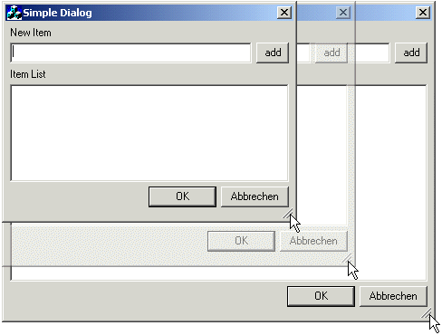
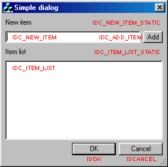
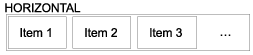
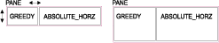
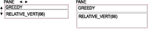
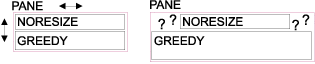
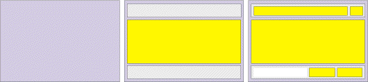
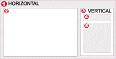
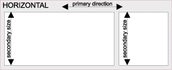

|
||||||||
| ||||||||
|
| ||||||||
| |||||||||||||

If you often use Dialogs and want to resize them you will have noticed that there is no feature in MFC that helps you arranging the dialog controls automatically after resizing. You have to do it by hand. Maybe you have seen some layouting mechanism in other languages (like Java) - then this one will look familiar to you.
I will mostly refer to Dialogs, but this code can be used to layout any
CWnd. Currently these classes/features are supported:
This section will briefly describe how to incorporate Layout Management into your code. For a full description of the Layout Manager look at the later sections.
First of all you need to include the headers. These are all located in the
file ETSLayout.h. It's best to include it directly in your
stdafx.h. All the classes are defined in the namespace
'ETSLayout', therefore it is suggested that you add the following line just
below the #include :
... #include "ETSLayout.h" using namespace ETSLayout; ...
You also need to include the file ETSLayout.cpp to your
project in order to use the classes. Do this directly from DevStudio under
Project > Add to Project > Files.
Let's say you want your Dialog CMyDialog to be resizable. Then
you will have to change the baseclass of CMyDialog to
ETSLayoutDialog. e.g. If CMyDialog is derived from
CDialog you will just have to replace all occurrences of
CDialog with ETSLayoutDialog
If you want to add a new resizable Dialog just add it as a normal
CDialog and change the baseclass later as described above.
The WS_THICKFRAME style is added automatically in
ETSLayoutDialog::OnInitDialog, in case you forgot to give the
dialog a resizable border in the resource editor.
Now comes the really important step: You will have to define the actual layout. This will describe the way you want the dialog items to be resized and arranged.
In fact there are two different interfaces to define the layout. These will be described later in the reference section. I will show you the Stream Interface here.
On the left side you see the dialog and all the control IDs that you want to define the layout for. On the right side you will find the proposed panes. You will notice that all vertical panes are marked red whereas all horizontal panes are blue.

Usually you define the layout in you dialog's
OnInitDialog()-Handler. The first step is to create the Root
Pane. In this case we need a VERTICAL one as the subpanes on the
first level are HORIZONTAL. Note that there is no semicolon at
the end of the line as we will add items to the Root Pane with the streaming
operator<<().
BOOL CMyDialog::OnInitDialog()
{
ETSLayoutDialog::OnInitDialog();
// define the Layout
CreateRoot(VERTICAL)
The first Item we want to add is IDC_NEW_ITEM_STATIC, the
topmost subitem of the Root Pane. As this is a simple static (text) we don't
need to resize this item. Therefore it gets the resizing mode
NORESIZE. For access to the root pane use the return value of
CreateRoot() or the autopointer
m_RootPane:
<< item ( IDC_NEW_ITEM_STATIC, NORESIZE )
The next two items (blue border) form a subpane, because we want them to be
in one line (remember: the Root Pane is vertical, so all subpanes are
horizontal). In the Stream
Interface to the layout definition you have to add an open brace followed
by a Pane
creator function (in this case pane()). All following items
up to the closing brace are now placed into this subpane. We do want this
subpane to expand horizontally, but the height should always stay the same
(therefore the ABSOLUTE_VERT Resizing
Mode).
<< ( pane(HORIZONTAL, ABSOLUTE_VERT )
Here the horizontal subpane has just two items and no subpanes itself. The
first item is the one we want to grow (the button shall stay at the right
border). A GREEDY items uses as much space as it gets (it will
share it equally with other GREEDY items, though. So if the next
item is not sizable it will always be at the right border (as the first
GREEDY one takes all the leftover space).
<< item( IDC_NEW_ITEM, GREEDY ) << item( IDC_ADD_ITEM, NORESIZE )
Note that IDC_NEW_ITEM will not be resized vertically because
its parent pane has the ABSOULUTE_VERT Resizing
Mode! Now the first subpane is complete and we can close the brace and
thus end the definition of this subpane.
)
Next there is a simple static (text) item we have to add - you've seen that before...
<< item ( IDC_ITEM_LIST_STATIC, NORESIZE )
Until now there were only items which either were not resizable at all or
only in horizontal direction. If a dialog has only items of this kind, it
won't be sizable in vertical direction at all! But in this example the next
item (the listbox) can be resized in both horizontal and vertical direction.
As in this case there is no limiting parent pane (in contrast to
IDC_NEW_ITEM before) this item can be expanded vertically:
<< item ( IDC_ITEM_LIST, GREEDY )
The last subpane is similar to the first one. If we want all the buttons on
the right side there must be an item consuming all the remaining space to
"push" the buttons to the right border. In this case there is no such item and
that's where itemGrowing() comes into play. This adds the
pseudopane (paneNull) that can always be used as a placeholder.
It is not displayed nor is there any Control associated with it.
The rest of this subpane is like the one above:
<< ( pane(HORIZONTAL, ABSOLUTE_VERT ) << itemGrowing( HORIZONTAL ) << item( IDOK, NORESIZE ) << item( IDCANCEL, NORESIZE ) );
The definition of the layout is complete now. To activate the Layout you
would have to call UpdateLayout() (if you don't call it the
dialog will not be laid out until you resize it!)
UpdateLayout(); return TRUE; }
That's it: You just created a completely automatically laid-out dialog! Simple, isn't it? The only real thing to do is to define the layout correctly, which can be tricky for very complex layouts.
The two orientations HORIZONTAL and VERTICAL for
subpanes tell the LayoutManger how to add new items/subpane to that pane. For
HORIZONTAL Panes all items are added from left to right. This
however does not mean, that HORIZONTAL Panes are only
horizontally sizable, it just refers to the orientation and direction in which
items/subpanes are added! The orientation of a pane is also called its
primary direction

The actual layout parameters are set for every item/subpane individually. The LayoutManager then composes all theses constraints into the global layout.
There are numerous different Resizing Modes (or Layout Codes). Some of them
may be used together with Alignment
Modes. To combine the modes just use the | operator as in
NORESIZE | ALIGN_RIGHT.
The Resizing Modes are of type layResizeMode. In order to
combine multiple modes with the |-operator I needed a little trick.
Normally you can't just write X | Y if X and
Y are enumerated types and the result has to be enumerated too. I
could have used normal DWORD Values instead (internally they are
handled like this anyway), but then I would have lost the static type checking
for parameters. Therefore I just overloaded layResizeMode
operator|(layResizeMode X, layResizeMode Y) to combine the
DWORD-Values of X and Y with the standard
|-operator and then casting the result back to
layResizeCode.
If you omit the Resizing Mode GREEDY is the default parameter.
This means that by default the item/subpane grows into both orientations
(horizontally and vertically).
The explanations are mostly speaking of Items. This is for the sake of brevity. Of course the same is true for Subpanes. In fact the LayoutManager does not make a difference between Items and SubPanes because they both are derived from the same baseclass.
Available space in primary direction is assigned in this order:
ABSOLUTE_XXX Items is subtracted from
the available space. The XXX refers to the primary direction,
i.e. HORZ when the Items are placed on a HORIZONTAL
pane and analogous for VERT and VERTICAL.
RELATIVE_XXX Items are taking their share of the
remaining space (depending on the percentage value). Note that you should not
add relative Items with a cumulated percentage of more than 100 :)
GREEDY
items.
GREEDY [default]As already mentioned a greedy Item grows in both horizontal and vertical direction. If there is only one greedy Item in a pane it takes all the space that is left from other items. If there are multiple greedy items all the remaining space is equally distributed among them.

You may also use greedy items in combination with paneNull to
fill up space (in order to keep some other items right or at the bottom).
ABSOLUTE_HORZIf you want an Item not to change its horizontal extent you'll have to use this code. The current horizontal size as in the dialog template is used. Panes with this mode are calculating its initial horizontal extend based on its items.
Note that panes with such a restriction will not allow items to be sized
horizontally - even if these items themselves have the GREEDY
Resize Mode. On the other hand a GREEDY pane with only
ABSOULTE_HORZ items will not be able to resize itself horizontally
either!
RELATIVE_HORZYou may want some items which cover a certain percentage of available space. This is the Resize Mode you'll need to employ. When you use this Resize Mode you must supply a x-size for the item. The x-size is then interpreted as an percentage value (between 1 and 100), e.g. an x-size of 30 means that the item will take 30% of the available space in horizontal direction.
To fill up the complete space you would either use a complementary sized
RELATIVE_HORZ Item (e.g. if you have an 60% Item you would have to
add an 40% Item) or just use a GREEDY Item which automatically
fills the rest of the space
Please note that an item with RELATIVE_HORZ | RELATIVE_VERT does
not generally consume x% of horizontally and y% of vertically available
space! This is because panes are laid-out in primary directions only (either
horizontally for HORIZONTAL and vertically for
VERTICAL orientation. But if you place a RELATIVE_HORZ
Items in a RELATIVE_VERT Pane you can achieve this type of
Layout.
ABSOLUTE_VERTThis is the same as ABSOLUTE_HORZ just for the vertical
direction.
RELATIVE_VERTThis is the same as RELATIVE_HORZ just for the vertical
direction.

NORESIZEIt is also possible to keep the initial size of an Item. Actually
NORESIZE is defined as ABSOLUTE_HORZ | ABSOLUTE_VERT.
A good example is the "Ok" Button, which usually shall keep it's initial
size.
Alignment Modes are used in conjunction with Resize Modes. When there is more than one Item in a pane and one item is not resizable this situation can occur:

As the Item must not grow bigger there is more space available than the Item can use (I will refer to this as the surplus space). The question is, where should the Item be placed in the surplus space?
ALIGN_LEFTThe item is aligned at the left border of the surplus space, if any.
ALIGN_RIGHTThe item is aligned at the right border of the surplus space, if any.
ALIGN_TOPThe item is aligned at the top border of the surplus space, if any.
ALIGN_BOTTOMThe item is aligned at the bottom border of the surplus space, if any.
ALIGN_HCENTERThe item is centered horizontally in the surplus space, if any.
ALIGN_VCENTERThe item is centered vertically in the surplus space, if any.
ALIGN_CENTERThe item is centered horizontally and vertically in the surplus space,
if any. In fact ALIGN_CENTER = ALIGN_HCENTER | ALIGN_VCENTER.
ALIGN_FILL_HORZThe item is stretched horizontally to fill the surplus space, regardless of it's Resize Mode.
ALIGN_FILL_VERTThe item is stretched vertically to fill the surplus space, regardless of it's Resize Mode.
ALIGN_FILLThe item is stretched horizontally and vertically to fill the surplus
space, regardless of it's Resize Mode. In fact ALIGN_FILL =
ALIGN_HFILL | ALIGN_VFILL.
The Raw Interface is the most basic way to define the layout of your dialog. Most of the methods used here are the same as with the Stream Interface. The difference is the way you compose the panes and subpanes. The Raw Interface uses a C style approach with member function calls, whereas the Stream Interface uses the C++ streaming operator. I recommend using the Stream Interface where possible.
With the Raw Interface you assemble the layout in a Bottom-Up way. I.e. you first group your Dialog controls into panes, then these panes in further (parent-) panes until at some point you add these parent panes to the one and only root pane.

To create a new pane you just call the pane() member function
(there is also support for special
controls that contain items itself and thus are used as Panes. There are
some arguments that you may alter to change the behavior:
// ETSLayoutMgr
CPane pane( layOrientation orientation,
layResizeMode modeResize = GREEDY,
int sizeBorder = nDefaultBorder,
int sizeExtraBorder = 0,
int sizeSecondary = 0);
GREEDY
ABSOLUTE_VERT for a HORIZONTAL pane) then
sizeSecondary is used as it's (secondary) size. If you do not
specify sizeSecondary and the mode is ABSOLUTE_VERT
(for a HORIZONTAL pane) it will be computed as the maximum height
of all SubPanes (the same is true for VERTICAL panes and subpanes
with ABSOLUTE_HORZ) Normally you would write code like this to create a pane in OnInitDialog() or any other member of your derived class:
// in OnInitDialog()
CPane newItemPane = pane( HORIZONTAL );
As you see you don't have to worry about pointers if you use
CPane and CPaneBase autopointers. These do automatic
reference counting and can be used exactly as pointers Pane* and
PaneBase* respectively. The use of CPane and
CPaneBase is strongly encouraged!
Use CPane if you are dealing with a Pane,
PaneTab or PaneCtrl, because CPaneBase
encapsulates a PaneBase pointer. PaneBase is the
general base class for all sort of items and has no support for adding
items. So you can't use it for subpanes.
There is one thing you should never do: Never use the Pane*
you get with GetPane() or GetPaneBase() to construct a
new CPane or CPaneBase!
An empty pane is - just nothing. You'll have to add items in order to make
any use of them. To add items to a pane use the Pane's member
functions (and that's the big difference to the Stream
Interface:
// members of Pane
bool addItem( UINT nID,
layResizeMode modeResize = GREEDY,
int sizeX = 0,
int sizeY = 0,
int sizeXMin = 0,
int sizeYMin = 0);
bool addItem( CWnd* pWnd,
layResizeMode modeResize = GREEDY,
int sizeX = 0,
int sizeY = 0,
int sizeXMin = 0,
int sizeYMin = 0);
bool addPane( CPane pSubpane );
The first two members are for adding controls to a pane.
nID or a subclassed
member of the control through pWnd
ABSOLUTE_VERT for a HORIZONTAL pane) then
sizeSecondary is used as it's (secondary) size. If you do not
specify sizeSecondary and the mode is ABSOLUTE_VERT
(for a HORIZONTAL pane) it will be computed as the maximum Height
of all SubPanes (the same is true for VERTICAL panes and subpanes
with ABSOLUTE_HORZ)
sizeX and
sizeY. You may omit these values (or set them to 0).
In this case the initial size is based on the size of the control in the
dialog template.
sizeXMin and
sizeYMin. If you omit these values (or set them to
-1) the current size of the control as defined in the dialog
template will be the minimal size for this control. The LayoutManager will
ensure that the control is never made smaller than this. The dialog items
(and thus the dialog itself) will not be able to shrink smaller than in the
dialog template (if you're just using the default parameters). If you set
sizeXMin and/or sizeYMin to 0 the item
will be able to shrink (almost) completely. There are some special cases which have to be taken into account. Normally no items in the layout are allowed to overlap. But if you want to use a CTabCtrl or a CStatic Groupbox there will be items you want to place inside these controls. Fortunately there are some special classes to support this. The corresponding constructing functions are:
// members of ETSLayoutMgr
CPane paneTab( CTabCtrl* pTab,
layOrientation orientation,
layResizeMode modeResize = GREEDY,
int sizeBorder = nDefaultBorder,
int sizeExtraBorder = 0,
int sizeSecondary = 0);
CPane paneCtrl( CWnd* pCtrl,
layOrientation orientation,
layResizeMode modeResize = GREEDY,
int sizeBorder = nDefaultBorder,
int sizeExtraBorder = 0,
int sizeTopExtra = 0,
int sizeSecondary = 0);
CPane paneCtrl( UINT nID,
layOrientation orientation,
layResizeMode modeResize = GREEDY,
int sizeBorder = nDefaultBorder,
int sizeExtraBorder = 0,
int sizeTopExtra = 0,
int sizeSecondary = 0);
As you may have guessed paneTab takes care of a TabCtrl. With
paneCtrl you get something between a Pane and an item. It behaves
like a Pane but does also resize a dialog control according to its own size. You
will want to use this one for CStatic groupboxes.
Special actions are taken to reduce flicker inside these controls.
Until now we know how to create panes and how to add items to these panes. The only thing missing is how to "wire" these panes to the dialog itself. As already mentioned above there exists something called a Root Pane.
This special pane is the "mother of all panes". If the window is resized, this pane is automatically resized to the new client area and thus all siblings update their layout, too.
Moreover, if the siblings pose a constraint on minimum or maximum size of the
window this is also taken into account (Note: You have to add modifications to
your CMainFrame if you want ETSLayoutFormView to do
that. See Sample and/or header).
The root pane also has an orientation. Create it with a call to:
// member of ETSLayoutMgr
CPane CreateRoot(layOrientation orientation,
int sizeBorder = nDefaultBorder,
int sizeExtraBorder = 0 );
The arguments are the same as for Pane.
However, sizeBorder sets the border between the Window's border and
the controls. If you want some items to stick close to the Window's border use
0 here. You will eventually need some fillers if you don't want all
items to stick to the border, though.
The Root Pane is accessed through the member m_RootPane,
e.g.:
m_RootPane->addItem ( IDC_ITEM );
This is what you'll have to write to define the equivalent layout to the sample above:
CPane newItemPane=new Pane ( this, HORIZONTAL );
newItemPane->addItem ( IDC_NEW_ITEM, GREEDY );
newItemPane->addItem ( IDC_ADD_ITEM, NORESIZE );
CPane bottomPane=new Pane ( this, HORIZONTAL );
bottomPane->addItem ( paneNull, GREEDY );
bottomPane->addItem ( IDOK, NORESIZE );
bottomPane->addItem ( IDCANCEL, NORESIZE );
CreateRoot( VERTICAL );
m_RootPane->addItem ( IDC_NEW_ITEM_STATIC, NORESIZE );
m_RootPane->addPane ( newItemPane, ABSOLUTE_VERT );
m_RootPane->addItem ( IDC_ITEM_LIST_STATIC, NORESIZE );
m_RootPane->addItem ( IDC_ITEM_LIST, GREEDY );
m_RootPane->addPane ( bottomPane, ABSOLUTE_VERT );
UpdateLayout();
The Stream Interface adds a simple and natural access to the layout
definition. Items/subpanes are added to other panes through the stream
operator<<(). In contrast to the Raw Interface the
definition is some sort of Top-Down:

The starting point is always the Root Pane. It is created exactly as with the Raw Interface:
// members of ETSLayoutMgr
CPane CreateRoot(layOrientation orientation,
int sizeBorder = nDefaultBorder,
int sizeExtraBorder = 0 );
You then may use m_RootPane as the destination for stream
operations like this:
m_RootPane << item( IDC_SOMETHING) << item( IDC_WHATEVER);
It is also possible to add Items directly after the CreateRoot()
call:
CreateRoot(VERTICAL)
<< item( IDC_SOMETHING) << item( IDC_WHATEVER);
Alternatively you may omit the call to CreateRoot() if you are
using a special version of the UpdateLayout() call. The Pane you
provide in the call is then used as the root pane
// members of ETSLayoutMgr
virtual void UpdateLayout(CPane p);
You would use it like this to define the complete layout in a single line of code:
// in OnInitDialog()
UpdateLayout( pane(VERTICAL)
<< item( IDC_SOMETHING) << item( IDC_WHATEVER) );
You've already seen how items are created and added to panes with the Stream Interface:
// members of ETSLayoutMgr
CPaneBase item(UINT nID,
layResizeMode modeResize = GREEDY,
int sizeX = 0,
int sizeY = 0,
int sizeXMin = -1,
int sizeYMin = -1);
CPaneBase item(CWnd* pWnd,
layResizeMode modeResize = GREEDY,
int sizeX = 0,
int sizeY = 0,
int sizeXMin = -1,
int sizeYMin = -1);
The parameters are the same as with the Raw Interface.
Of course there is support for subpanes, too. It work exactly like in the Raw Interface. Panes are created like Items, but when you add items to the pane you should make sure to use braces around the pane and its items like this:
m_RootPane << ( paneHorz (ABSOLUTE_VERT ) << item( paneNull, GREEDY ) << item( IDOK, NORESIZE ) << item( IDCANCEL, NORESIZE ) );
The above code adds a HORIZONTAL pane with 3 Items to the Root
Pane. If you forget the braces like this...
m_RootPane << paneHorz (ABSOLUTE_VERT ) << item( paneNull, GREEDY ) << item( IDOK, NORESIZE ) << item( IDCANCEL, NORESIZE );
...you would add an empty HORIZONTAL pane and 3
Items to the Root Pane.
We've already used the Stream Interface in the sample above, so we don't really need another one here :) For more samples have a look at the demo sourcecode.
There are some useful extra features included. I will not describe them all here, but you should have a look at the headerfile. Here are some of the function you should have a look at:
// members of Pane
/**
* Add a whitespace Item (paneNull) of variable size with
* a minimum size of 0
*/
bool addGrowing();
/**
* Add a whitespace Item (paneNull) of fixed size based on the
* current layout (as in the dialog template). Based on the layout
* of the pane vertical or horizontal spacing is considered
*
* First argument is the left (top) item for a HORIZONTAL
* (VERTICAL) pane
*/
bool addItemSpaceBetween( CWnd* pWndFirst,
CWnd* pWndSecond );
bool addItemSpaceBetween( UINT nIDFirst,
UINT nIDSecond );
/**
* Add a whitespace Item (paneNull) of fixed size based on the
* size of another item
*/
bool addItemSpaceLike( CWnd* pWnd );
bool addItemSpaceLike( UINT nID );
For the Stream Interface there are equivalent functions:
// members of ETSLayoutMgr
/**
* Add a whitespace Item (paneNull) of variable size with
* a minimum size of 0
*/
CPaneBase itemGrowing(layOrientation orientation);
/**
* Add a whitespace Item (paneNull) with fixed size
*/
CPaneBase itemFixed(int sizePrimary);
/**
* Add a whitespace Item (paneNull) of fixed size based on the
* current layout (as in the dialog template). Based on the layout
* of the pane vertical or horizontal spacing is considered
*
* First argument is the left (top) item for a HORIZONTAL
* (VERTICAL) pane
*/
CPaneBase itemSpaceBetween( layOrientation orientation,
CWnd* pWndFirst,
CWnd* pWndSecond );
CPaneBase itemSpaceBetween( layOrientation orientation,
UINT nIDFirst,
UINT nIDSecond );
/**
* Add a whitespace Item (paneNull) of fixed size based on the
* size of another item
*/
CPaneBase itemSpaceLike( layOrientation orientation,
CWnd* pWnd );
CPaneBase itemSpaceLike( layOrientation orientation,
UINT nID );
ETSLayoutPropertySheet
directly, as in: ETSLayoutPropertySheet sheet(_T("PropertySheet Test"));
CPropPage1 page1;
CPropPage2 page2;
sheet.AddPage(&page1);
sheet.AddPage(&page2);
sheet.DoModal();
However, if you want to add additional controls to the sheet itself (i.e.
not on PropertyPages), you will need to redefine the layout of the
ETSLayoutPropertySheet itself. This framework provides you with two
hooks for that:
virtual void AddMainArea(CPane paneRoot, CPaneBase
itemTab)Define the layout of the MainArea of the PropertySheet. Normally, the MainArea is covered by the TabControl only, thus the default is:
void ETSLayoutPropertySheet::AddMainArea(CPane paneRoot, CPaneBase itemTab)
{
// the default is: Whole main Area is covered by the TabCtrl
paneRoot << itemTab;
}
virtual void AddButtons(CPane paneBottom)To change the way the buttons at the bottom are displayed you may override this method. If you want to have the buttons at some totally different place just override this and do nothing here. But consider, that the horizontal line in WizardMode will be added below the MainArea nevertheless.
You don't really need to know how all that works. If you skip this section you won't miss anything. But if you're interested in the layout algorithm I will try to describe it briefly. If you want to know more look at the source, it's pretty well documented.
The idea is to split the dialog in Panes. Each pane has an orientation (horizontal or vertical) and may contain items and/or other (sub-)panes. It is necessary that all subpanes are of opposite orientation (a vertical pane may only contain horizontal subpanes and vice versa).

When a pane is going to be resized it gets a certain space to consume. Lets say [1] (as in the picture above) gets a certain position assigned (this could be either because [1] is the Root Pane or because it gets its new position from its parent Pane). [1] is a horizontal Pane and has two items: An item [2] and a subpane [3].

Resizing the Dialog is now be as easy as requesting the root pane to fit in the current client area! Actually this is done automatically in the OnSize handler, so you just have to define the layout itself.
// Version: 1.0 [1999/12/04] Initial Article on CodeProject // // 1999/12/10 Erase Backgroung within TabCtrl was 'fixed' badly. Reverted to // old working code // 2000/02/02 When the Dialog is child of a View the class works correctly // now [Didier BULTIAUW] // 2000/02/15 Combo-Boxes were not working correctly (in all modes!) // 2000/02/17 aligned SpinButton Controls (with buddy) now handled // automatically // !! do not add such a control to the layout !! it is always // reattached to its buddy. // 2000/02/17 changed some cotrol class names to the defined constants // // Version: 1.1 [2000/02/17] // // 2000/02/25 fixed auto alignment of SpinButton Controls to only affect // visible ones // 2000/03/07 Fixed growing Dialog after minimizing and restoring // 2000/05/22 Whole Statusbar (Gripper) is not excluded anymore in EraseBkgnd() // instead only the triangular Gripper is excluded // 2000/05/31 Fix for PropertySheets with PSH_WIZARDHASFINISH [Thömmi] // 2000/05/31 Fix for UpDown-Controls with EditCtrl Buddy in PropertyPages. // These were not repositioned every time the page is being show // until the first resize // 2000/07/28 Problems with resizing ActiveX Controls fixed [Micheal Chapman] // 2000/07/28 Some strings were not properly wrapped with _T() // 2000/08/03 Check for BS_GROUPBOX was not correct as BS_GROUPBOX is more than one Bit // 2000/08/03 New override AddMainArea added to ETSLayoutPropertySheet in order to // have a hook for additional controls in a PropertySheet (besides the Tab) // 2000/08/03 New override AddButtons added to ETSLayoutPropertySheet in order to // have a hook for additional controls in the bottem pane of a PropertySheet // // Version: 1.2 [2000/08/05]
This Article and all accompanying material is ©1998-1999 Erwin Tratar. All rights reserved.
The source code may be used in compiled form in any way you desire (including usage in commercial applications), providing that your application adds essential code (i.e. it is not only a wrapper) to the functionality found here
Redistribution of the sourcecode itself, publication in any media or inclusion in a library requires the authors expressed written consent. You may not sale this code for profit.
THIS SOFTWARE IS PROVIDED "AS IS" WITHOUT EXPRESS OR IMPLIED WARRANTY. USE IT AT YOUR OWN RISK! THE AUTHOR ACCEPTS NO LIABILITY FOR ANY DAMAGE/LOSS OF BUSINESS THAT THIS PRODUCT MAY CAUSE.
independant software developer from Germany.
author of Euraconf98, an
isdn/pabx management software
Programmer since 1991, c/c++/java, started
with professional games development, now mainly network, telecommunication and
internet stuff
Click here to visit Erwin Tratar's homepage.
| ||||||